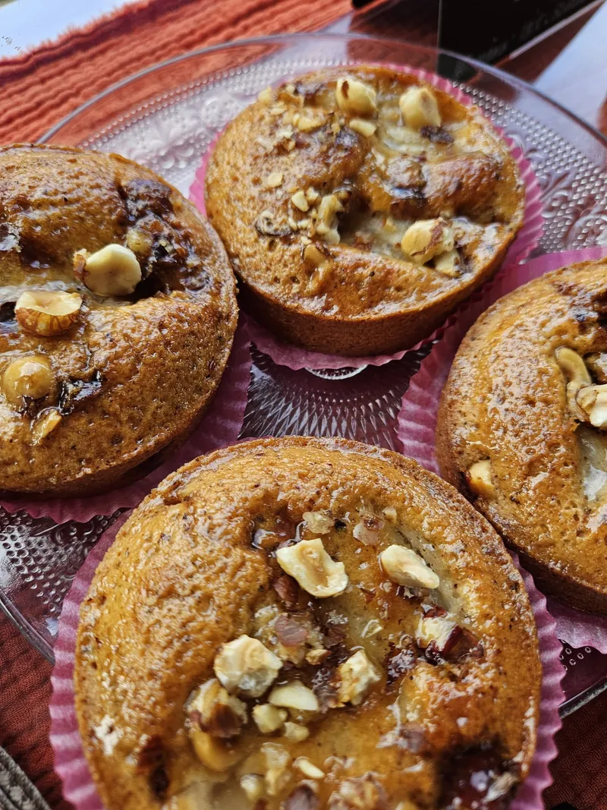
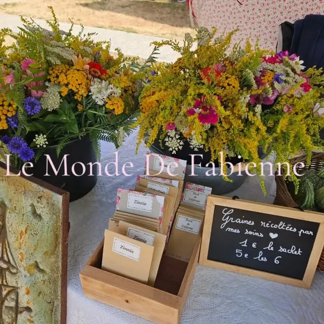
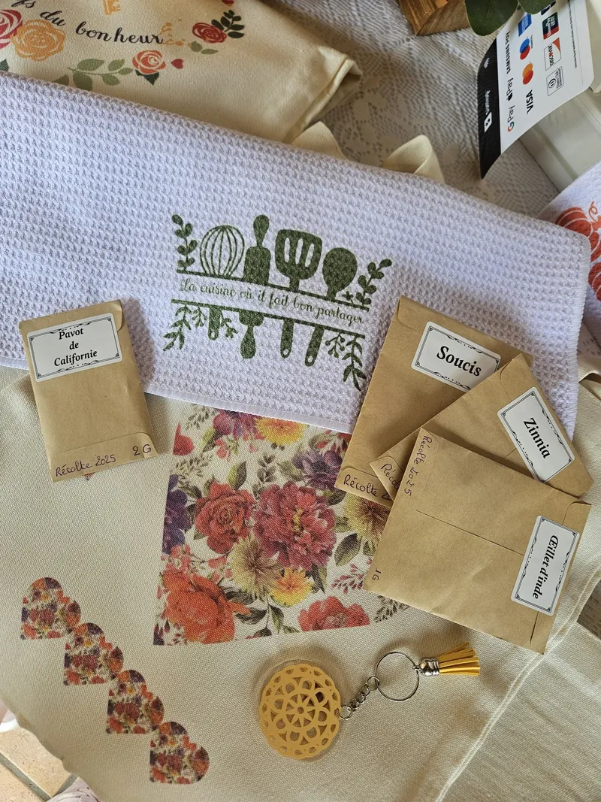
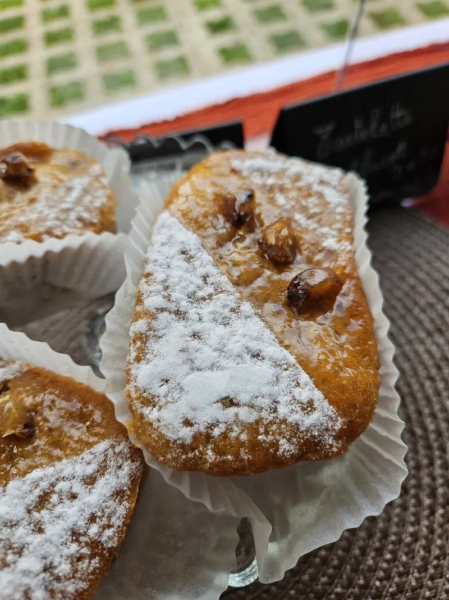
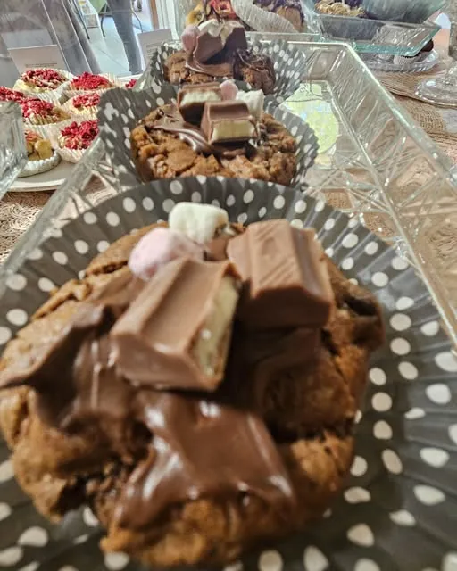
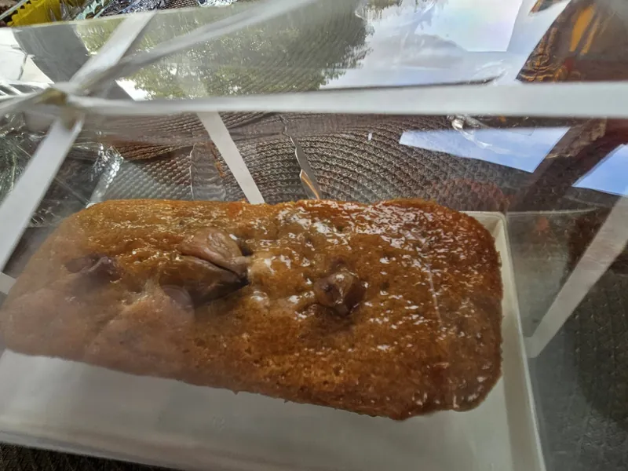
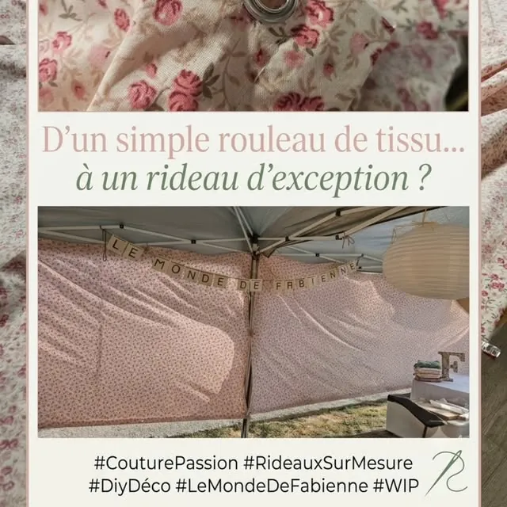

Torchons & sacs en tissu
Des torchons et des sacs imprimés de motifs fleuris et de petits mots doux, comme « La cuisine où il fait bon partager ».
Saint-Sébastien-de-Morsent · Eure
Des douceurs faites maison, des fleurs et des graines récoltées au jardin, des créations pour embellir la maison. Bienvenue dans le monde de Fabienne.
fait main, avec le cœur ♡



Les douceurs
Tout est préparé à la main, avec de bons ingrédients et beaucoup de gourmandise. Des recettes de saison qui changent au fil de l’année.
Et sur les stands, un chocolat chaud à l’ancienne pour accompagner le tout.
Une envie, une fête à préparer ? Écrivez-moi sur WhatsApp


Fleurs & graines
Les fleurs poussent au jardin, et à la fin de la saison, je récolte leurs graines pour vous les proposer en petits sachets. De quoi semer à votre tour, et voir fleurir chez vous ce qui a fleuri chez moi.
Graines récoltées par mes soins ♡
1 € le sachet5 € les 6
Pavot de Californie · Soucis · Zinnia · et d’autres selon la récolte
Et selon la saison, des bouquets de fleurs fraîches sur le stand.
Créations & déco
La couture, la récup’, les petites touches qui changent tout. Chaque pièce est unique.
Des torchons et des sacs imprimés de motifs fleuris et de petits mots doux, comme « La cuisine où il fait bon partager ».

D’un simple rouleau de tissu à un rideau d’exception : des rideaux cousus à vos dimensions, dans le tissu de votre choix.
Il suffisait de voir son potentiel : un meuble sombre de brocante devient une jolie étagère pleine de charme. Quelques heures de travail, beaucoup de patience, et une seconde vie.
Mon histoire
Le Monde de Fabienne est né en 2026, d’une reconversion professionnelle et d’une envie simple : réunir ce que j’aime faire. Cuisiner des douceurs, faire pousser des fleurs, coudre, donner une seconde vie aux objets.
Mon fil conducteur, c’est de la graine à l’assiette : du jardin à la cuisine, en passant par la maison, tout est fait main, à Saint-Sébastien-de-Morsent, près d’Évreux.
Fabienne
Me trouver
Vous me retrouvez sur les marchés, fêtes et salons de la région, avec mon stand de douceurs, de fleurs et de créations.
Les prochaines dates sont annoncées sur Facebook et Instagram.
Commander
Le plus simple, c’est WhatsApp : choisissez ce qui vous fait envie, le message est déjà prêt, vous n’avez plus qu’à préciser pour quand et pour combien. Je vous réponds avec plaisir.
Par téléphone06 62 05 10 17 Par e-mailcontact@lemondedefabienne.fr